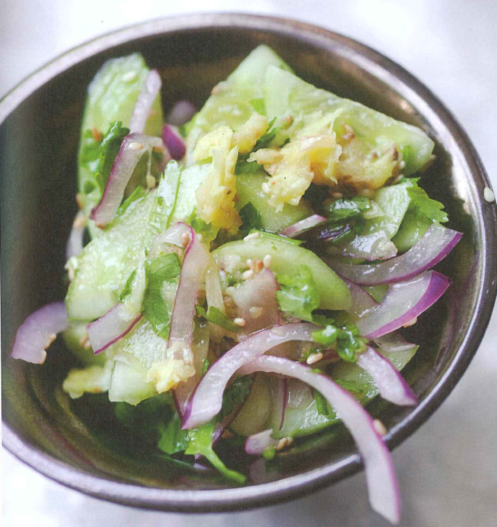

Cucumber salad with smashed garlic and ginger

I have a terrible habit of adding yoghurt or soured cream to almost anything that's been cooking for a long time, has got a lot of heat, is slightly greasy or just seems a bit heavy to me. Terrible – because I know not everyone is keen on adding dairy products left, right and centre, particularly not to a perfectly nice dish of pulses, a spicy vegetable stew or a roasted cut of lean meat. So here's a perfect alternative, a dish shouting freshness that would go well with plenty of hearty dishes. Try it with Sweet potato cakes or with Coconut rice with sambal and okra.
Dressing:
Whisk together all the dressing ingredients in a medium mixing bowl. Add the sliced red onion, mix well and leave aside to marinate for about an hour.
Place the ginger and salt in a mortar and pound well with a pestle. Add the garlic and continue pounding until it is also well crushed and broken into pieces (stop pounding before it disintegrates into a purée). Use a spatula to scrape the contents of the mortar into the bowl with the onion and dressing. Stir together.
Cut the cucumbers lengthways in half, then cut each half on an angle into 5mm thick slices. Add the cucumber to the bowl, followed by the sesame seeds and coriander. Stir well and leave to sit for 10 minutes.
Before serving, stir the salad again, tip out some of the liquid that has accumulated at the bottom of the bowl and adjust the seasoning.